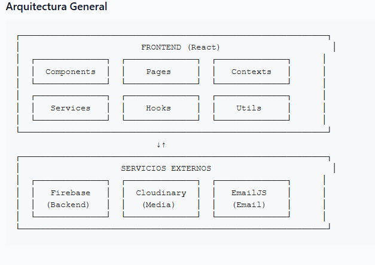
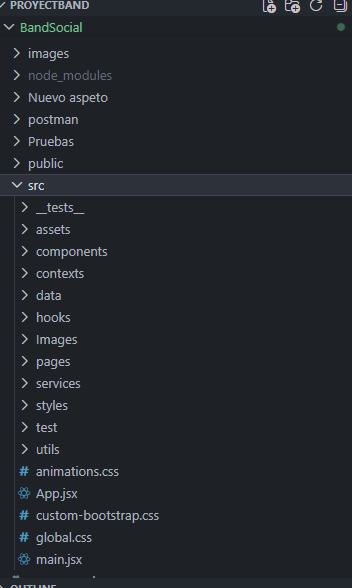
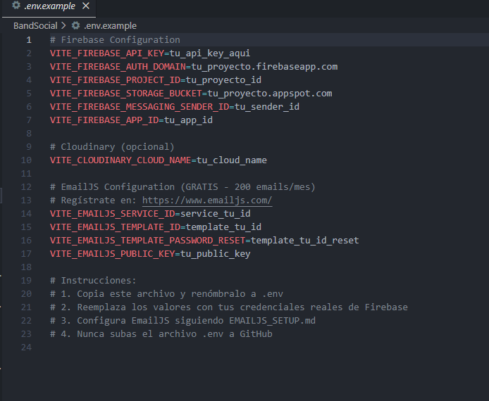
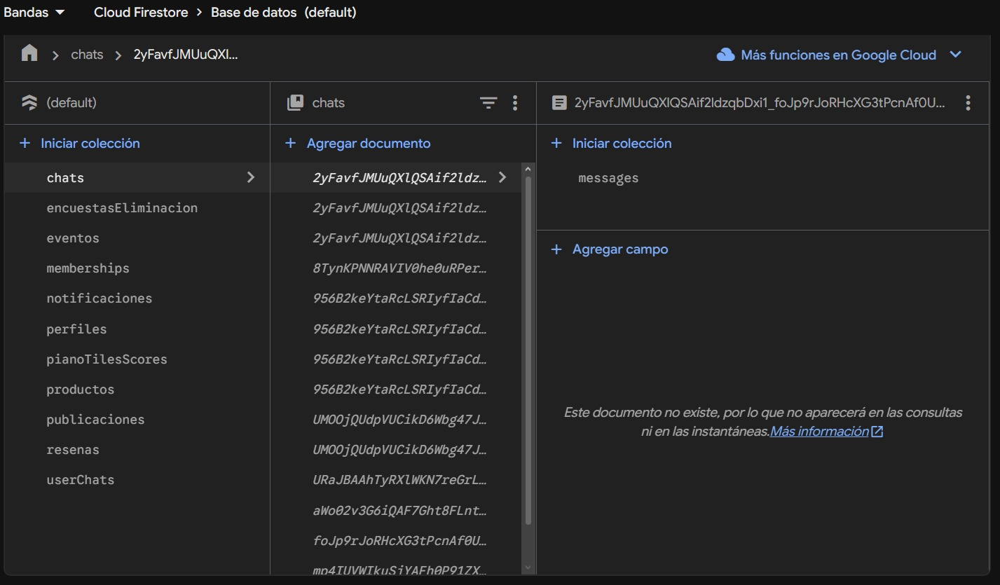
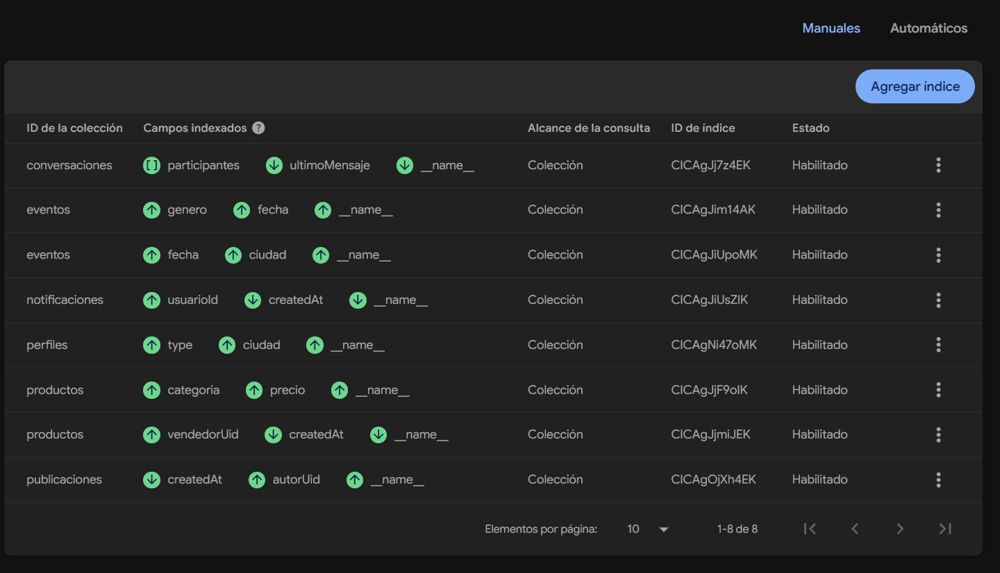
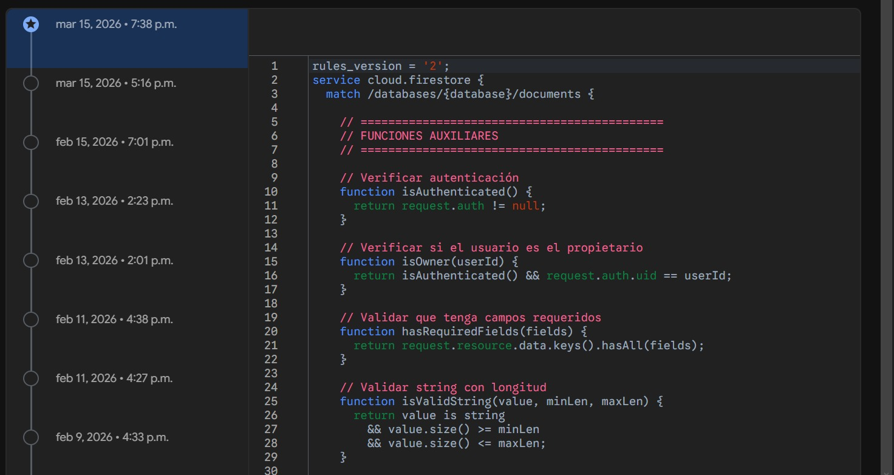
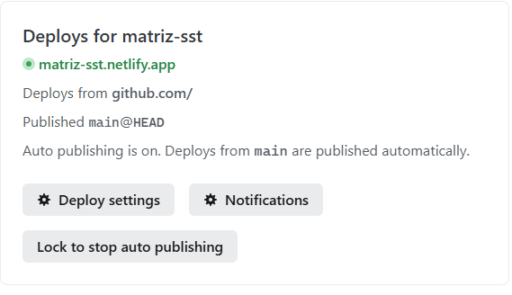
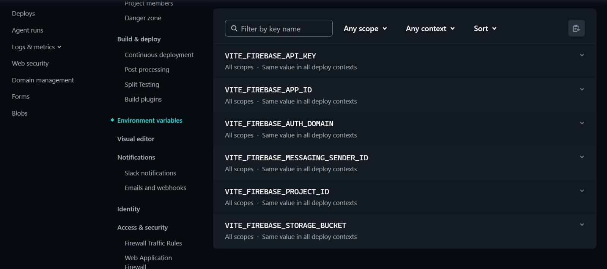

Manual Técnico — BandSocial
1. Visión General de la Arquitectura
BandSocial es una Single Page Application (SPA) construida en React. No tiene backend propio: utiliza Firebase como Backend-as-a-Service, Cloudinary para gestión de imágenes y EmailJS para el envío de correos.
Características Técnicas Clave
- Lazy loading de todas las páginas con
React.lazy()+Suspense - Code splitting automático por vendors (React, Firebase, UI)
- Modo oscuro/claro por CSS variables +
data-themeen el HTML root - Modo invitado vía
localStorage+GuestContext - Realtime en chat y notificaciones vía
onSnapshotde Firestore - PWA —
manifest.json+ Service Worker incluido
Diagrama de arquitectura — documento ARQUITECTURA_PROYECTO.md abierto en el editor

documentacion/manuales/arquitectura/ARQUITECTURA_PROYECTO.md y captura el diagrama ASCII de la sección 1.2. Stack Tecnológico
Frontend
| Tecnología | Versión | Rol |
|---|---|---|
| React | 19.1.0 | Librería UI principal |
| Vite | 7.0.0 | Build tool y dev server |
| React Router DOM | 7.6.3 | Navegación SPA |
| Bootstrap | 5.3.7 | Framework CSS base |
| React Bootstrap | 2.10.10 | Componentes Bootstrap para React |
| Material UI | 7.1.2 | Componentes adicionales |
| React Icons | 5.5.0 | Íconos |
Backend y Servicios Externos
| Servicio | Versión | Rol |
|---|---|---|
| Firebase Auth | 11.9.1 | Autenticación de usuarios |
| Firestore | 11.9.1 | Base de datos NoSQL en tiempo real |
| Firebase Storage | 11.9.1 | Almacenamiento de archivos |
| Cloudinary | CDN | Procesamiento y entrega de imágenes |
| EmailJS | 4.4.1 | Envío de emails |
Formularios, Validación y Testing
| Librería | Versión | Rol |
|---|---|---|
| React Hook Form | 7.59.0 | Gestión de formularios |
| Yup | 1.6.1 | Validación de esquemas |
| Vitest | 4.0.18 | Tests unitarios |
| @testing-library/react | 14.1.2 | Tests de componentes |
| Cypress | 13.6.2 | Tests E2E |
3. Estructura del Proyecto
Árbol de carpetas del proyecto abierto en VS Code (panel Explorer)

src/ completa en el panel lateral.4. Configuración del Entorno
4.1 Variables de Entorno
Copia .env.example a .env y completa los valores:
.env al repositorio. Ya está incluido en .gitignore.4.2 Inicialización de Firebase (src/services/firebase.js)
Archivo .env abierto en el editor con los valores configurados

.env en VS Code y captura con los campos rellenos, tapando los valores reales.5. Flujos de Datos Principales
5.1 Flujo de Autenticación
5.2 Flujo de Publicación con Imagen
5.3 Chat en Tiempo Real
Firebase Console mostrando la colección chats con mensajes en tiempo real

bandas-f9c77 → Firestore → colección chats → captura los documentos.6. Base de Datos — Firestore
Colecciones Principales
| Colección | Descripción | Lectura | Escritura |
|---|---|---|---|
perfiles | Datos de usuario | Pública | Solo el dueño |
publicaciones | Feed social | Pública | Solo el autor |
eventos | Eventos musicales | Pública | Solo el creador |
productos | MusicMarket | Pública | Solo el vendedor |
conversaciones | Chat 1 a 1 | Solo participantes | Solo participantes |
notificaciones | Notificaciones | Solo destinatario | Cualquier autenticado |
sesiones | Tracking login/logout | Solo admin | El propio usuario |
pagos | Transacciones premium | Usuario o admin | Solo el usuario |
Esquema perfiles/{uid}
Índices Compuestos
- Publicaciones por
autorUid+createdAt DESC - Eventos por
fecha ASC+ciudad - Productos por
categoria+precio ASC - Notificaciones por
usuarioId+leida+createdAt DESC
Firebase Console → Firestore → pestaña "Índices" con los índices compuestos listados

7. Reglas de Seguridad
Las reglas de Firestore están en firestore.rules. Funciones auxiliares reutilizables:
Resumen de Reglas por Colección
| Colección | Leer | Crear | Actualizar | Eliminar |
|---|---|---|---|---|
perfiles | ✅ Pública | Solo el uid | Dueño o campo seguidores | Dueño o admin |
publicaciones | ✅ Pública | Auth + autorUid==uid | Solo si autor | Autor o admin |
productos | ✅ Pública | Auth + precio > 0 | Vendedor o rating | Vendedor o admin |
conversaciones | Solo participantes | Participante | Solo participantes | ❌ |
notificaciones | Solo destinatario | Cualquier auth | Solo campo leida | Solo destinatario |
sesiones | Solo admin | El propio usuario | ❌ Inmutable | Solo admin |
Editor de reglas de Firestore en Firebase Console mostrando las reglas activas

8. Gestión de Estado
Estado Local (useState)
Usado para UI de componente: modales, tabs, forms, loadings.
Estado Global (Context API)
ThemeContext persiste en localStorage, aplica data-theme al <html>:
ChatDockContext controla las ventanas de chat abiertas:
GuestContext gestiona el modo visitante sin cuenta:
Estado del Servidor (onSnapshot)
onSnapshot deben retornar unsubscribe en el cleanup del useEffect para evitar memory leaks.9. Build y Despliegue
Configuración de Vite (vite.config.js)
Scripts Disponibles
| Comando | Descripción |
|---|---|
npm run dev | Servidor de desarrollo en localhost:5173 |
npm run build | Build de producción en /dist |
npm run preview | Preview del build de producción |
npm run lint | Verificar errores de ESLint |
npm run test | Ejecutar tests unitarios (Vitest) |
npm run test:coverage | Cobertura de tests |
npm run test:e2e | Tests E2E con Cypress |
Pipeline de Despliegue (Netlify)
Configuración en netlify.toml:
Log de build exitoso en el dashboard de Netlify

Variables de entorno configuradas en Netlify (Site settings → Environment variables)

10. Testing
Tests Unitarios (Vitest)
Ubicados en src/__tests__/ y src/test/.
Terminal mostrando el resultado de npm run test con tests pasando

npm run test y captura el output con los tests en verde.Tests E2E (Cypress)
Interfaz de Cypress abierta con los specs disponibles

npm run test:e2e y captura la ventana de Cypress antes de ejecutar algún test.11. Guía de Contribución
Flujo de Trabajo Git
Convención de Commits
| Prefijo | Uso |
|---|---|
Feature: | Nueva funcionalidad |
Fix: | Corrección de bug |
Refactor: | Refactorización sin cambio funcional |
Docs: | Cambios en documentación |
Style: | Cambios de estilos CSS |
Test: | Agregar o modificar tests |
Revert: | Revertir un commit anterior |
Convenciones de Código
- Componentes en PascalCase:
ProfileCard.jsx - Hooks en camelCase con prefijo
use:useNotifications.js - Servicios en camelCase:
notificationService.js - Usar Vanilla CSS para estilos — no inline styles ni Tailwind
- Exportar contextos con su
Providery hookuse*en el mismo archivo - Limpiar siempre los listeners de Firestore (
onSnapshot) en eluseEffectcleanup
📁 Carpeta de Imágenes
Guarda todas las capturas en:
| Archivo | Sección | Descripción |
|---|---|---|
arquitectura-diagrama.png | 1 | Diagrama de arquitectura |
estructura-proyecto-vscode.png | 3 | Árbol de carpetas en VS Code |
env-configurado.png | 4 | Archivo .env con variables |
firestore-chats-consola.png | 5.3 | Colección chats en Firebase |
firestore-indices.png | 6 | Índices compuestos en Firebase |
firestore-reglas-consola.png | 7 | Editor de reglas de Firestore |
netlify-build-log.png | 9 | Log de build en Netlify |
netlify-env-vars.png | 9 | Variables de entorno en Netlify |
vitest-resultado.png | 10 | Resultado de Vitest en terminal |
cypress-ui.png | 10 | Interfaz de Cypress abierta |
bandas-f9c77 de Firebase Console. Capturas de Netlify en bandsociall.netlify.app.